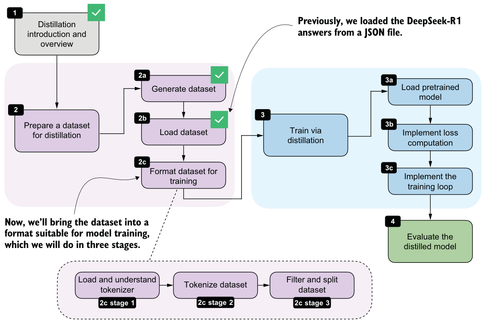
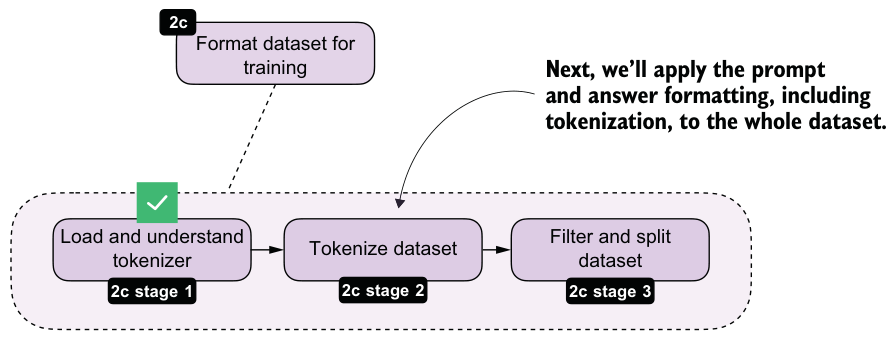
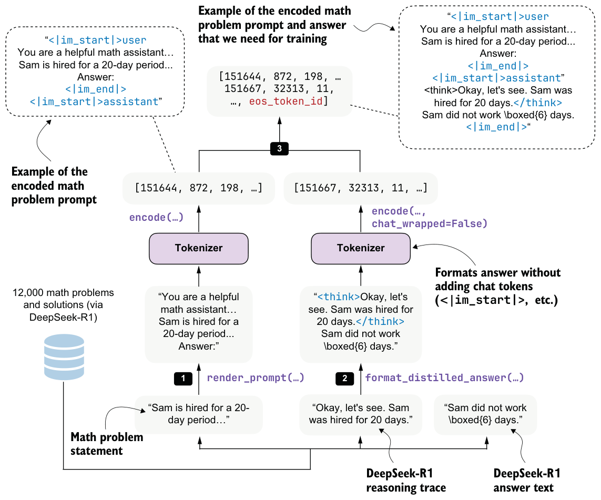

8.4Building training examples
Next, we’ll convert the raw dataset entries into training examples that can be consumed by the model. At a high level, this means formatting the prompts and answers consistently, tokenizing them, and storing the resulting token IDs together with the prompt length. This preprocessing stage is shown in figure 8.7.
Most of the work here is straightforward preprocessing. In the RLVR chapters, we performed similar preparation on the fly because each training example was sampled once and then discarded. Distillation is different, and we usually loop over the

same examples for multiple training epochs. It is therefore more efficient to format and tokenize the dataset once, store the processed examples, and reuse them during training. This is also one reason distillation is often easier to iterate on than RLVR, once the teacher data has been collected.
What are training epochs?
8.4.1Loading and understanding the tokenizer
We’ll begin with the tokenizer. Here, we are using the Qwen3 reasoning tokenizer because it supports the <think>...</think> tokens introduced in chapter 7.
from reasoning_from_scratch.qwen3 import (
download_qwen3_small,
Qwen3Tokenizer,
)
def load_reasoning_tokenizer(local_dir="qwen3"):
download_qwen3_small(
kind="reasoning", tokenizer_only=True, out_dir=local_dir
)
tokenizer_path = Path(local_dir) / "tokenizer-reasoning.json"
tokenizer = Qwen3Tokenizer(
tokenizer_file_path=tokenizer_path,
apply_chat_template=True,
add_generation_prompt=True,
add_thinking=True,
)
return tokenizer
tokenizer = load_reasoning_tokenizer()
We set apply_chat_template=True and add_generation_prompt=True so that thetokenizer applies the same prompt-formatting style used for Qwen3’s chat and reasoning models. The following example shows the additional wrapper tokens that are inserted automatically.
prompt = "Sam is hired for a 20-day period..."
prompt_ids = tokenizer.encode(prompt)
decoded_prompt = tokenizer.decode(prompt_ids)
print(decoded_prompt)The formatted text is as follows:
<|im_start|>user
Sam is hired for a 20-day period...<|im_end|>
<|im_start|>assistantThe <|im_start|>user marks the start of the user prompt, <|im_end|> marks the end of the prompt, and <|im_start|>assistant marks the start of the model response. This chat-style wrapping is optional, but it is a common convention for instruction and chat fine-tuning.
For the target answer, we’ll disable this wrapping by setting chat_wrapped=False. Otherwise, both the prompt and the answer would introduce their own assistant-start tokens, which is not what we want when concatenating them into a single training sequence:
answer = (
"<think>Okay, let me try to solve "
"this problem...</think> \\boxed{4}"
)
answer_ids = tokenizer.encode(answer, chat_wrapped=False)
decoded_answer = tokenizer.decode(answer_ids)
print(decoded_answer)As shown, the chat_wrapped=False setting suppressed the chat template for the answer tokens:
<think>Okay, let me try to solve this problem...</think> \boxed{4}For training, we need the full sequence of token IDs: the wrapped prompt, followed by the teacher answer, followed by an end-of-sequence token. This is the sequence the model will see during next-token prediction:
token_ids = prompt_ids + answer_ids + [tokenizer.eos_token_id]
decoded_token_ids = tokenizer.decode(token_ids)
print(decoded_token_ids)The formatted string is as follows:
<|im_start|>user
Sam is hired for a 20-day period...<|im_end|>
<|im_start|>assistant
<think>Okay, let me try to solve this problem...</think>\boxed{4}<|im_end|>It is worth emphasizing that the reasoning tokenizer is mainly convenient because it already includes the <think></think> tokens. In principle, though, we could also use the base tokenizer. Likewise, the chat template is not strictly required. We will keep it here because it matches the formatting used by Qwen3’s own reasoning models and helps keep the training and evaluation setup consistent.
If you later evaluate the model with the scripts from earlier chapters, remember to use the --which_model "reasoning" setting so that the evaluation uses the same tokenizer variant.
8.4.2Formatting and tokenizing the dataset
Now that we’ve loaded the tokenizer, we can apply the formatting and tokenization steps to the whole dataset, as illustrated in figure 8.8.
With the tokenizer in place, we can now apply the formatting and tokenization steps consistently across the whole dataset via a build_examples function. The full formatting and tokenization pipeline for a single training sample is illustrated in figure 8.9.
Here, the build_examples function performs three steps. First, it renders and tokenizes the prompt. Second, it formats and tokenizes the teacher answer. Third, it concatenates both parts and records the prompt length so that we can later compute the loss only on the answer tokens. The following listing shows how we can implement that in code.


from reasoning_from_scratch.ch03 import render_prompt
def build_examples(data, tokenizer):
examples = []
skipped = 0
for entry in data:
try:
prompt = render_prompt(entry["problem"])
prompt_ids = tokenizer.encode(prompt)
target_answer = format_distilled_answer(entry)
answer_ids = tokenizer.encode(
target_answer, chat_wrapped=False
)
token_ids = (
prompt_ids + answer_ids + [tokenizer.eos_token_id]
)
if len(token_ids) < 2:
skipped += 1
continue
examples.append({
"token_ids": token_ids,
"prompt_len": len(prompt_ids),
})
except (KeyError, TypeError, ValueError):
skipped += 1
return examples, skipped
examples, skipped = build_examples(math_train, tokenizer)
print("Number of examples:", len(examples))
print("Number of skipped examples:", skipped)The resulting numbers after running the code in listing 8.4 are as follows:
Number of examples: 12000
Number of skipped examples: 0Next, let’s decode one of the training examples to inspect it further:
print(tokenizer.decode(examples[4]["token_ids"]))This is the output:
<|im_start|>user
You are a helpful math assistant.
Answer the question and write the final result on a new line as:
\boxed{ANSWER}
Question:
Sam is hired for a 20-day period...
Answer:<|im_end|>
<|im_start|>assistant
<think>Okay, let's see. Sam was hired for 20 days.... So answer is 6 days not
worked.</think>
...Sam did not work \(\boxed{6}\) days.<|im_end|>Looking at the preceding output, we can confirm that it meets all the formatting requirements. For instance, it uses the chat template correctly, and the answer’s reasoning trace is correctly enclosed in <think></think> tags. Finally, the answer ends with an end-of-sequence token, <|im_end|>.